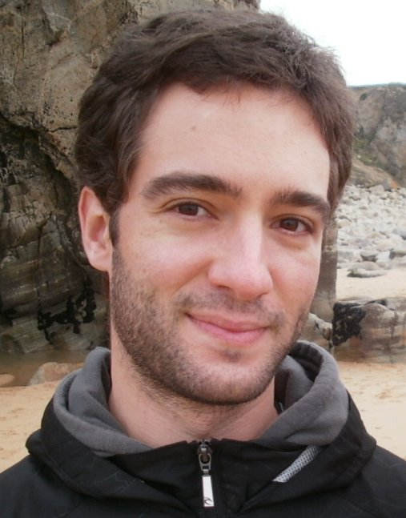

Ricardo Marques - Site Currently Under Construction

Serra Hunter Fellow (Lector)
Short Bio: To be done.
Google Scholar
ORCID
ResearcherID
Scopus Author
Publications
- 2021. R. Marques, C. Bouville, K. Bouatouch, Extensible Spherical Fibonacci Grids, IEEE Transactions on Visualization and Computer Graphics (Volume: 27, Issue: 4)
- 2020. R. Marques, C. Bouville, K. Bouatouch, Spectral Analysis of Quadrature Rules and Fourier Truncation-Based Methods Applied to Shading Integrals, IEEE Transactions on Visualization and Computer Graphics (Volume: 26, Issue: 10)
- 2019. R. Marques, C. Bouville, K. Bouatouch, Optimal Sample Weights for Hemispherical Integral Quadratures, Computer Graphics Forum (Volume: 38, Issue: 1)
- 2017. T. Dutra, R. Marques (joint first author), J. Cavalcante-Neto, C. Vidal, J. Pettré, Gradient‐based Steering for Vision‐based Crowd Simulation Algorithms, Computer Graphics Forum (Volume: 36, Issue: 2)
- 2017. A. Bahrehmand, T. Batard, R. Marques, A. Evans, J. Blat, Optimizing layout using spatial quality metrics and user preferences, Graphical Models (Volume: 93)
- 2016. EG 2016
- 2016. Book Chapter
- 2015. Book
- 2013. R. Marques, C. Bouville, M. Ribardière, L. P. Santos, K. Bouatouch, A Spherical Gaussian Framework for Bayesian Monte Carlo Rendering of Glossy Surfaces, IEEE Transactions on Visualization and Computer Graphics (Volume: 19, Issue: 10)
- 2013. R. Marques, C. Bouville, M. Ribardière, L. P. Santos, K. Bouatouch, Spherical Fibonacci Point Sets for Illumination Integrals, Computer Graphics Forum (Volume: 32, Issue: 8)